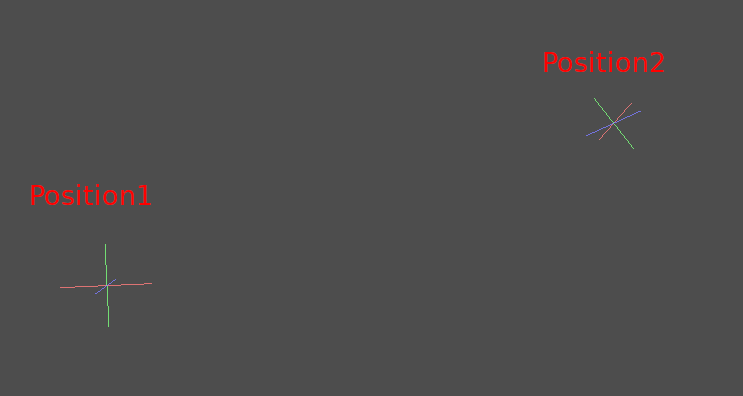
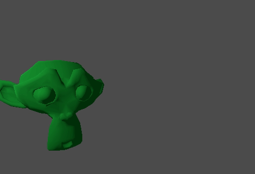

Nội suy
Nội suy là một phép toán phổ biến trong lập trình đồ họa, được dùng để pha trộn hoặc chuyển tiếp giữa hai giá trị. Nội suy cũng có thể được dùng để làm mượt chuyển động, phép xoay, v.v. Bạn nên làm quen với nó để mở rộng tầm hiểu biết của mình với tư cách là một nhà phát triển game.
Ý tưởng cơ bản là bạn muốn chuyển tiếp từ A sang B. Một giá trị t biểu diễn các trạng thái ở giữa.
Ví dụ, nếu t bằng 0 thì trạng thái là A. Nếu t bằng 1 thì trạng thái là B. Bất kỳ giá trị nào ở giữa là một phép nội suy.
Giữa hai số thực (số dấu phẩy động), một phép nội suy có thể được mô tả như sau:
interpolation = A * (1 - t) + B * t
Và thường được rút gọn thành:
interpolation = A + (B - A) * t
Tên của loại nội suy này, biến đổi một giá trị thành giá trị khác với tốc độ không đổi, là "tuyến tính". Vì vậy, khi bạn nghe nói về Nội suy tuyến tính (Linear Interpolation), bạn biết họ đang nói đến công thức này.
Có những loại nội suy khác sẽ không được đề cập ở đây. Bạn nên đọc thêm trang Bezier sau đó.
Nội suy vector
Các kiểu vector (Vector2 và Vector3) cũng có thể được nội suy, chúng đi kèm các hàm tiện dụng để làm việc này: Vector2.lerp() và Vector3.lerp().
Với nội suy bậc ba, còn có Vector2.cubic_interpolate() và Vector3.cubic_interpolate(), thực hiện phép nội suy kiểu Bezier.
Đây là ví dụ mã giả để đi từ điểm A đến B bằng nội suy:
var t = 0.0
func _physics_process(delta):
t += delta * 0.4
$Sprite2D.position = $A.position.lerp($B.position, t)
private float _t = 0.0f;
public override void _PhysicsProcess(double delta)
{
_t += (float)delta * 0.4f;
Marker2D a = GetNode<Marker2D>("A");
Marker2D b = GetNode<Marker2D>("B");
Sprite2D sprite = GetNode<Sprite2D>("Sprite2D");
sprite.Position = a.Position.Lerp(b.Position, _t);
}
Nó sẽ tạo ra chuyển động sau:

Nội suy transform
Cũng có thể nội suy toàn bộ transform (hãy đảm bảo chúng có tỉ lệ đồng đều, hoặc ít nhất là cùng một tỉ lệ không đồng đều). Để làm việc này, có thể dùng hàm Transform3D.interpolate_with().
Đây là ví dụ biến đổi một con khỉ từ Position1 sang Position2:

Sử dụng mã giả sau:
var t = 0.0
func _physics_process(delta):
t += delta
$Monkey.transform = $Position1.transform.interpolate_with($Position2.transform, t)
private float _t = 0.0f;
public override void _PhysicsProcess(double delta)
{
_t += (float)delta;
Marker3D p1 = GetNode<Marker3D>("Position1");
Marker3D p2 = GetNode<Marker3D>("Position2");
CSGMesh3D monkey = GetNode<CSGMesh3D>("Monkey");
monkey.Transform = p1.Transform.InterpolateWith(p2.Transform, _t);
}
Và một lần nữa, nó sẽ tạo ra chuyển động sau:

Làm mượt chuyển động
Nội suy có thể được dùng để bám theo một giá trị đích đang di chuyển một cách mượt mà, chẳng hạn như vị trí hoặc góc xoay. Mỗi frame, lerp() di chuyển giá trị hiện tại về phía giá trị đích một tỉ lệ phần trăm cố định của phần chênh lệch còn lại giữa hai giá trị. Giá trị hiện tại sẽ di chuyển mượt về phía đích, chậm dần khi đến gần. Đây là ví dụ một hình tròn bám theo chuột bằng cách làm mượt nội suy:
const FOLLOW_SPEED = 4.0
func _physics_process(delta):
var mouse_pos = get_local_mouse_position()
$Sprite2D.position = $Sprite2D.position.lerp(mouse_pos, delta * FOLLOW_SPEED)
private const float FollowSpeed = 4.0f;
public override void _PhysicsProcess(double delta)
{
Vector2 mousePos = GetLocalMousePosition();
Sprite2D sprite = GetNode<Sprite2D>("Sprite2D");
sprite.Position = sprite.Position.Lerp(mousePos, (float)delta * FollowSpeed);
}
Kết quả trông như sau:

Điều này hữu ích để làm mượt chuyển động camera, cho đồng minh bám theo người chơi (đảm bảo họ ở trong một phạm vi nhất định) và cho nhiều mẫu thiết kế game phổ biến khác.
Ghi chú
Dù có dùng delta, công thức ở trên vẫn phụ thuộc vào framerate, vì tham số weight của lerp() biểu diễn một tỉ lệ phần trăm của phần chênh lệch còn lại giữa các giá trị, chứ không phải một lượng thay đổi tuyệt đối. Trong _physics_process(), điều này thường không sao vì vật lý được kỳ vọng duy trì framerate không đổi, và do đó delta được kỳ vọng giữ nguyên.
Để có phiên bản làm mượt nội suy không phụ thuộc framerate, có thể dùng cả trong process(), hãy dùng công thức sau:
const FOLLOW_SPEED = 4.0
func _process(delta):
var mouse_pos = get_local_mouse_position()
var weight = 1 - exp(-FOLLOW_SPEED * delta)
$Sprite2D.position = $Sprite2D.position.lerp(mouse_pos, weight)
private const float FollowSpeed = 4.0f;
public override void _Process(double delta)
{
Vector2 mousePos = GetLocalMousePosition();
Sprite2D sprite = GetNode<Sprite2D>("Sprite2D");
float weight = 1f - Mathf.Exp(-FollowSpeed * (float)delta);
sprite.Position = sprite.Position.Lerp(mousePos, weight);
}
Việc suy ra công thức này nằm ngoài phạm vi của trang này. Để được giải thích, hãy xem Improved Lerp Smoothing hoặc xem video Lerp smoothing is broken.